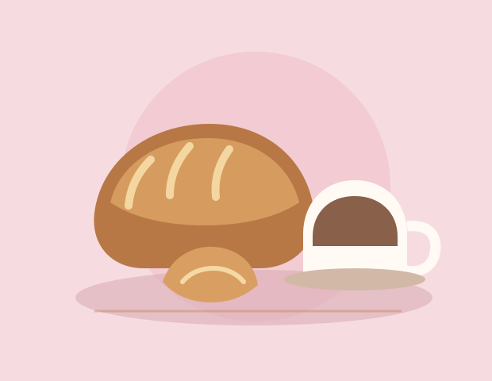

選得用心
仔細挑選適合的原料，讓每一種風味都有清楚、舒服的表現。
ABOUT THE BAKERY / 02
灰色麵包相信，一份剛好的麵包與一段自在的空白，都能讓日子變得柔軟。

GOODOUR STORY
生活常常被行程推著走，連吃一頓飯也像在趕路。灰色麵包的起點，是想把熟悉的烘焙香氣和一個可以休息的角落，帶回每天的路上。
我們希望你拿起麵包時，不只填飽肚子，也記得替自己留一點時間。這是一段品牌示範故事，實際成立經過與細節仍待店主確認。
WHAT WE CARE ABOUT
仔細挑選適合的原料，讓每一種風味都有清楚、舒服的表現。
尊重麵團發酵的時間，用耐心做出外層酥香、內裡柔軟的日常麵包。
讓空間保有簡單與舒適，陪你吃點東西、整理心情，再繼續出發。